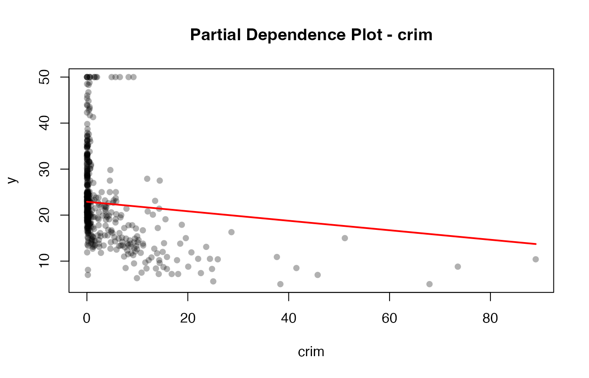

## Loading required package: doParallel## Loading required package: foreach## Loading required package: iterators## Loading required package: parallel## Loading required package: R6## Loading required package: Matrix## Loaded glmnet 4.1-10## randomForest 4.7-1.2## Type rfNews() to see new features/changes/bug fixes.
library(e1071)
# ------------------------------------------------------------
# REGRESSION EXAMPLES
# ------------------------------------------------------------
cat("\n=== REGRESSION EXAMPLES ===\n\n")##
## === REGRESSION EXAMPLES ===
# Example 1: Synthetic data (numeric y → automatic regression)
set.seed(123)
X <- MASS::Boston[, -ncol(MASS::Boston)]
y <- MASS::Boston$medv
# glmnet regression
cat("1. Ridge Regression (glmnet) - Auto-detected: Regression\n")## 1. Ridge Regression (glmnet) - Auto-detected: Regression
mod1 <- Model$new(glmnet::glmnet) # No task parameter needed!
mod1$fit(X, y, alpha = 0, lambda = 0.1)
mod1$print()## Model Object
## ------------
## Model function: self$model_fn
## Fitted: TRUE
## Task: regression
## Training samples: 506
## Features: 13
cat("\nPredictions:\n")##
## Predictions:## 1 2 3 4 5 6
## 30.12476 25.01360 30.57030 28.68765 28.04710 25.31151
cat("\n")
mod1$summary()##
## Model Summary - Numerical Derivatives
## ======================================
## Task: regression
## Samples: 506 | Features: 13
## Step size (h): 0.01
##
## Feature Mean_Derivative Std_Error t_value p_value Significance
## crim -1.032452e-01 7.837905e-15 -1.317256e+13 0 ***
## zn 4.322719e-02 5.216968e-15 8.285883e+12 0 ***
## indus 2.743581e-03 1.273890e-14 2.153704e+11 0 ***
## chas 2.753495e+00 6.050646e-15 4.550745e+14 0 ***
## nox -1.656232e+01 1.293028e-14 -1.280894e+15 0 ***
## rm 3.868607e+00 9.300418e-15 4.159605e+14 0 ***
## age -4.129908e-04 1.108270e-14 -3.726444e+10 0 ***
## dis -1.411492e+00 4.776813e-15 -2.954882e+14 0 ***
## rad 2.655385e-01 7.851465e-15 3.382025e+13 0 ***
## tax -1.038490e-02 8.323530e-15 -1.247656e+12 0 ***
## ptratio -9.325559e-01 6.254096e-15 -1.491112e+14 0 ***
## black 9.272792e-03 3.489110e-15 2.657638e+12 0 ***
## lstat -5.149643e-01 4.667193e-15 -1.103371e+14 0 ***
##
## Significance codes: 0 '***' 0.01 '**' 0.05 '*' 0.1 ' ' 1
mod1$plot(feature = 1)
(cv1 <- cross_val_score(mod1, X, y, cv = 5L)) # Auto-uses RMSE## | | | 0% | |============== | 20% | |============================ | 40% | |========================================== | 60% | |======================================================== | 80% | |======================================================================| 100%## [1] 5.255488 6.050598 6.147428 5.054657 4.942869##
## Mean RMSE: 5.490208
# randomForest regression
cat("\n2. Random Forest Regression - Auto-detected: Regression\n")##
## 2. Random Forest Regression - Auto-detected: Regression
mod2 <- Model$new(randomForest::randomForest) # No task parameter!
mod2$fit(X, y, ntree = 50)
mod2$print()## Model Object
## ------------
## Model function: self$model_fn
## Fitted: TRUE
## Task: regression
## Training samples: 506
## Features: 13
cat("\n")
mod2$summary(h = 0.01)##
## Model Summary - Numerical Derivatives
## ======================================
## Task: regression
## Samples: 506 | Features: 13
## Step size (h): 0.01
##
## Feature Mean_Derivative Std_Error t_value p_value Significance
## crim 0.27808959 0.329662424 0.8435587 3.993155e-01
## zn 0.00000000 0.000000000 NaN NaN <NA>
## indus 0.03961792 0.030839187 1.2846616 1.994995e-01 *
## chas 0.00000000 0.000000000 NaN NaN <NA>
## nox -7.59855104 1.939451552 -3.9178865 1.016265e-04 ***
## rm 4.33226614 0.538906676 8.0389914 6.471192e-15 ***
## age -0.02569829 0.023089867 -1.1129682 2.662516e-01
## dis -0.71310569 0.405677973 -1.7578122 7.938528e-02 **
## rad 0.01739130 0.017453435 0.9964402 3.195135e-01
## tax -0.01361660 0.008303022 -1.6399573 1.016368e-01 *
## ptratio -0.03075099 0.024143264 -1.2736881 2.033599e-01
## black 0.05649539 0.045334095 1.2462009 2.132684e-01
## lstat -0.47499012 0.124407440 -3.8180202 1.512437e-04 ***
##
## Significance codes: 0 '***' 0.01 '**' 0.05 '*' 0.1 ' ' 1
# ------------------------------------------------------------
# CLASSIFICATION EXAMPLES
# ------------------------------------------------------------
cat("\n\n=== CLASSIFICATION EXAMPLES ===\n\n")##
##
## === CLASSIFICATION EXAMPLES ===
# Example: Iris dataset (factor y → automatic classification)
data(iris)
# Binary classification with factor
cat("3. Binary Classification with Factor Response\n")## 3. Binary Classification with Factor Response
iris_binary <- iris[iris$Species %in% c("setosa", "versicolor"), ]
X_binary <- as.matrix(iris_binary[, 1:4])
y_binary <- iris_binary$Species # factor → classification
# Multi-class classification
cat("4. Multi-class Classification\n")## 4. Multi-class Classification
X_multi <- as.matrix(iris[, 1:4])
y_multi <- iris$Species # factor with 3 levels → multi-class classification
mod4 <- Model$new(randomForest::randomForest) # No task parameter!
mod4$fit(X_multi, y_multi, ntree = 50)
mod4$print()## Model Object
## ------------
## Model function: self$model_fn
## Fitted: TRUE
## Task: classification
## Training samples: 150
## Features: 4
## Classes: setosa, versicolor, virginica
## Class distribution:
##
## setosa versicolor virginica
## 50 50 50
(cv4 <- cross_val_score(mod4, X_multi, y_multi, cv = 5L)) # Auto-uses accuracy## | | | 0% | |============== | 20% | |============================ | 40% | |========================================== | 60% | |======================================================== | 80% | |======================================================================| 100%## [1] 0.9666667 0.9333333 1.0000000 0.9666667 0.9333333##
## Mean Accuracy: 0.96
y_multi_numeric <- as.numeric(y_multi)
mod4 <- Model$new(glmnet::glmnet) # No task parameter!
mod4$fit(X_multi, y_multi_numeric, family="multinomial")
mod4$print()## Model Object
## ------------
## Model function: self$model_fn
## Fitted: TRUE
## Task: regression
## Training samples: 150
## Features: 4
(cv4 <- cross_val_score(mod4, X_multi, y_multi_numeric, cv = 5L)) # Auto-uses accuracy## | | | 0% | |============== | 20% | |============================ | 40% | |========================================== | 60% | |======================================================== | 80% | |======================================================================| 100%## [1] 0.3186251 0.3500136 0.3191357 0.2776998 0.3485864##
## Mean Accuracy: 0.3228121